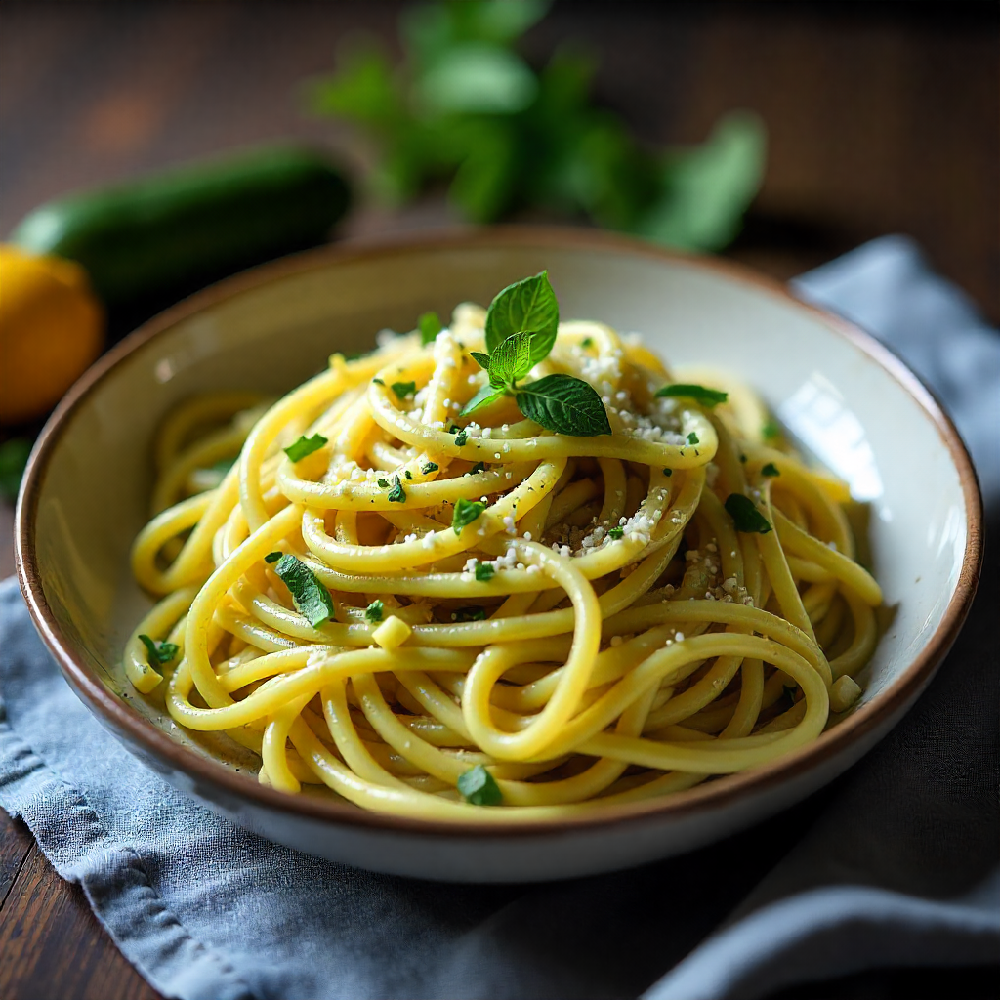

Zuccini-Zitronen-Spaghetti
Zubereitungszeit: 25 Min
normal
30.09.2025
Zutaten:
Für 2 Portion(en)
| 125g | Spaghetti |
| 175g | Zucchini |
| 1 | Zitrone(n) |
| 50 ml | Gemüsebrühe |
| 1 EL | Olivenöl |
| 0,5 TL | Thymian(getrocknet) |
| 50g | Feta-Käse |
| 1 | Knoblauchzehe(n) |
| Salz und Pfeffer |
nach Geschmack |
| evtl. | Kräutersalz |
Zubereitung:
- Zitronen waschen, abtrocknen und die Schale mit einem Zestenreißer in feine Streifen abziehen. Den Saft auspressen. Knoblauch schälen und fein hacken. Zucchini in etwa 3 cm lange Stifte schneiden.
- In einem großen Topf ca. 5 l Wasser mit 5 TL Salz und fast dem gesamten Zitronensaft zum Kochen bringen. Nudeln darin bissfest garen. Kurz vor Ende der Kochzeit die Zitronenzesten zufügen.
- Öl in einer beschichteten Pfanne erhitzen, Zucchini darin anbraten. Knoblauch und Thymian hinzufügen, mit Salz und Pfeffer würzen. Brühe und restlichen Zitronensaft zugießen und zugedeckt ca. 5 Minuten garen.
- Nudeln abgießen, abtropfen lassen und mit den Zucchini mischen. Mit zerbröckeltem Feta bestreuen.
- Feta kann nach Belieben durch Mozzarella oder Ziegenfrischkäse ersetzt werden.
Nährwerte pro Portion:
353
kcal
13.72g
Eiweiß
47.68g
Kohlenhydrate
11.02g
Fett
Rezept erstellt von:

Nil V.